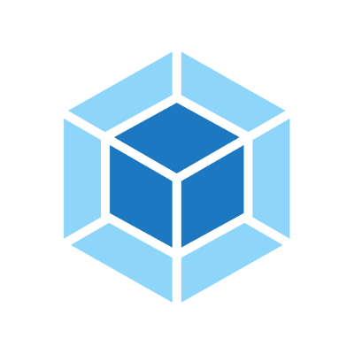
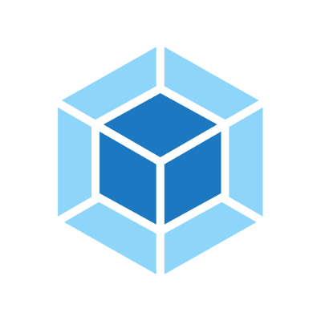
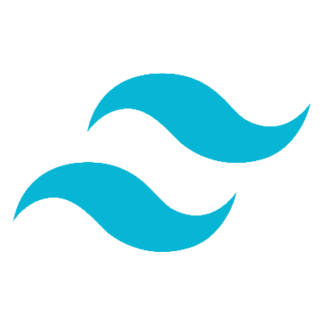
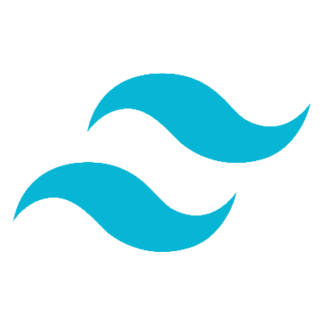

I am Nastassia Kanavalava
My name's Nastassia (you can call me Asia) and I am a frontend developer. I specialise in VueJS:
building SPAs, creating landing pages, integrating analytics tools like HubSpot, building and maintaining javascript frontend components in VueJS (both 2 and 3 in both options and composition api).
I am able to work while maintaining focus, I have ease to understand domains.
When communicating I am very calm, understanding and stoic. I also enjoy understanding all of the important things.
Previously I used to work in React, however I find VueJS ecosystem quite interesting and started building my projects and I happily enjoy VueJS's ecosystem.


 

 

and